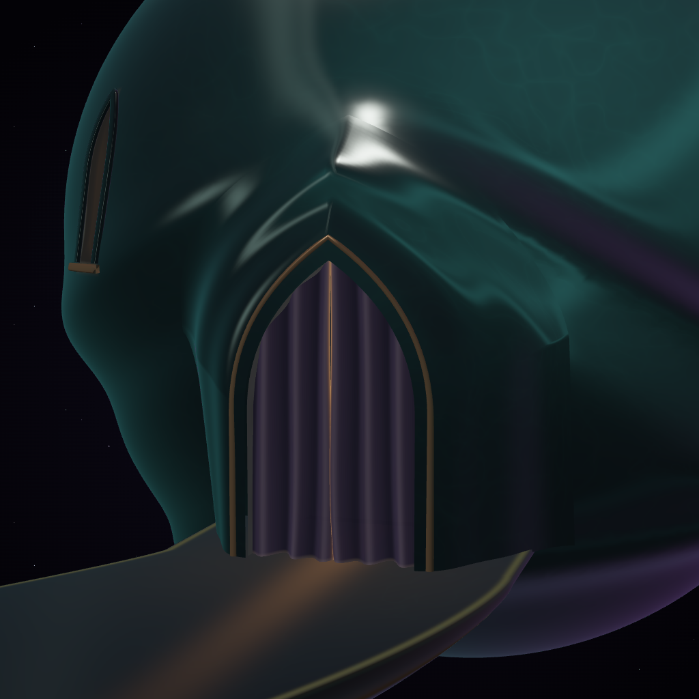
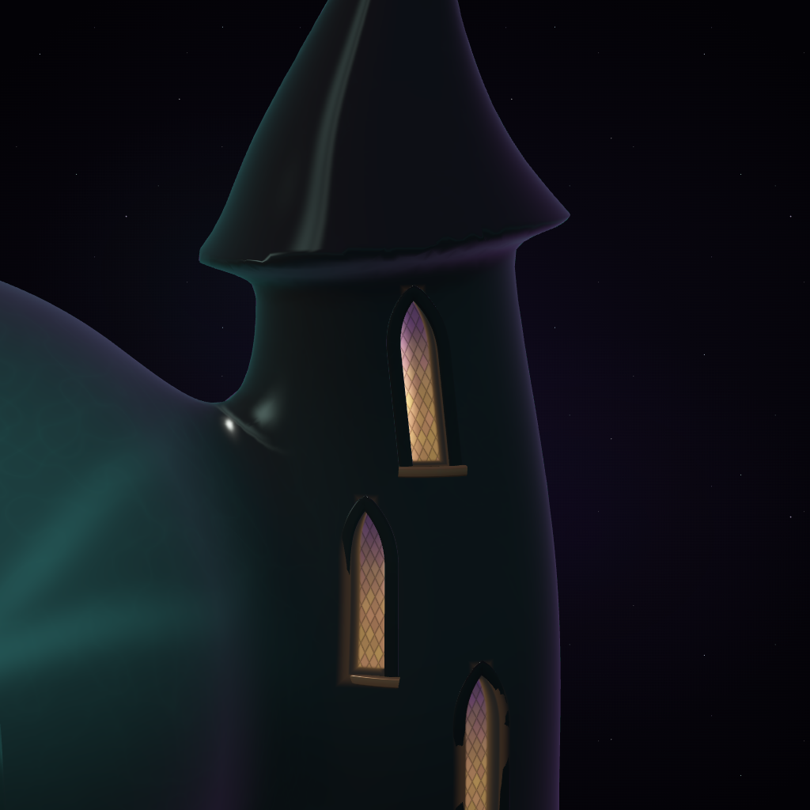
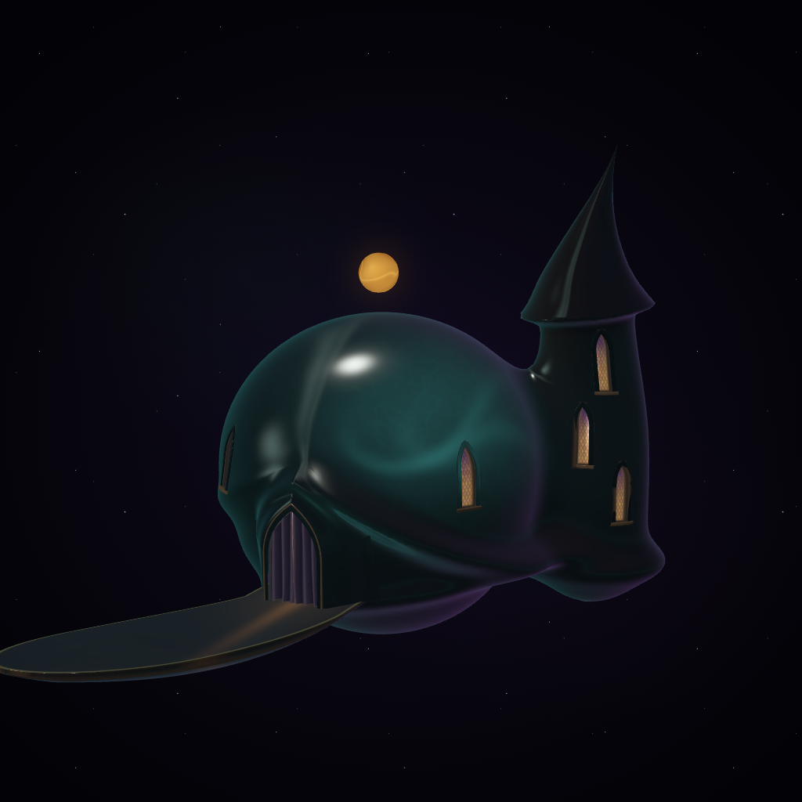
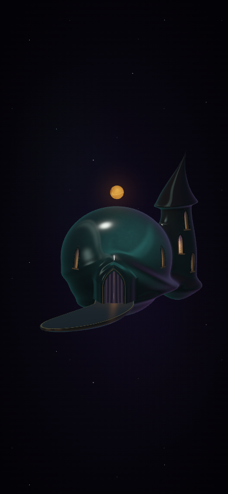
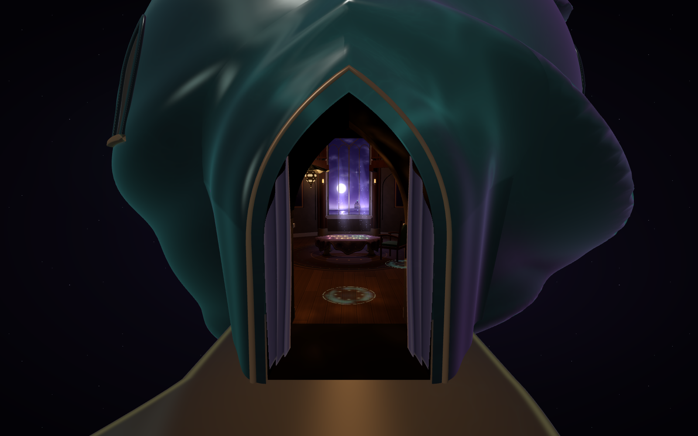

Concept B / Liquid Sanctuary · Korreksjon etter fase 2
Roligere glass. En mer frontal inngang.
Marmorerte overflateflekker er dempet, lyset ligger dypere i glasset og refleksjonene er roligere. Visningen er dreid 10° mot fronten, og dørsømmen ligger midt i bildet. Den godkjente geometrien er beholdt. Alle bilder av implementeringen er faktiske nettleseropptak.
Designfasit — originalt konsept B, utsnitt av hovedmotivet
Nå — nytt glass og 10° mer frontal visning
Konseptet er kunst; høyre detaljkolonne er bare beskåret i denne sammenligningen. Nettleserbildet er 1024 × 1024 ved samme animasjonstid som før (8,05 s).
Se spesielt på: om kuppelen nå oppleves som mørkt, dypt glass fremfor stein; om den svake indre gløden er tydelig nok; og om den mer frontale døren gir en bedre inngang til bygningen.
Fortsatt et stykke fra konseptet: konseptet har rikere indre lys, finere transparente slør og mer sammensatte refleksjoner. Denne versjonen er roligere og mørkere, særlig i tårnet, og kan fortsatt oppleves for enkel. Den eksisterende skjøten ved inngangen og fasetter i vinduslistene er synlige. Formen er ikke ombygd i denne korreksjonen.
Vinkel og inngang
Visningsvinkelen er dreid nøyaktig 10° rundt bygningen. Dette gir ønsket relative rotasjon i bildet, samtidig som døren og rommet beholder felles koordinater. Ved stillbildet er døren nå på 50 % av bildebredden; før var den på 43,77 % i kvadratvisningen. Vinkelen mot selve dørplanet er redusert fra 13,42° til 2,14°. Tårnet blir fortsatt stående tydelig på høyre side.
Nærbilder av det korrigerte materialet

Inngang — roligere glass rundt uendret åpning og gardiner. Før korreksjonen

Tårn — mindre flekkete overflate, men også mer dempet indre liv. Før korreksjonen
Annen vinkel og smal skjerm

Diagnostisk trekvartvisning — uendret kameravinkel for dette nærbildet
390 × 844, DPR 1 i desktop-nettleser. Ikke en fysisk mobiltest.Gjennom samme dør inn i rommet

Faktisk integrert inngang. Døråpning, rom og klarsignal for innlasting er bevart.Hele originalkonseptet · Overlevering og ytelsesmålinger · Kontrollresultater · Arkivert fase 2